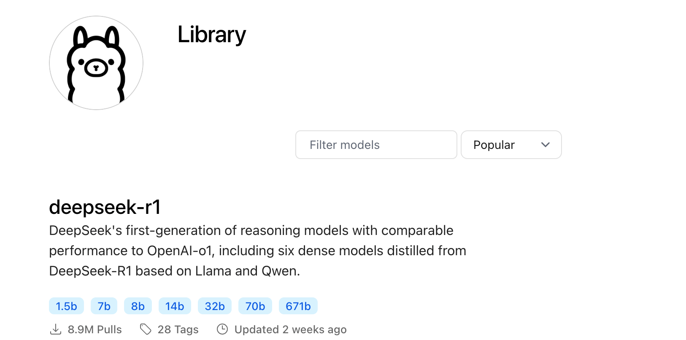

Ollama 基本概念
Ollamaは、ローカル環境で動作し、複数の自然言語処理（NLP）タスクをサポートする機械学習フレームワークであり、モデルの読み込み、推論、生成タスクに特化しています。
Ollamaを通じて、ユーザーはローカルに展開された大規模な事前学習済みモデルと簡単に対話できます。
1. モデル（Model）
Ollamaでは、モデルは中核となる構成要素です。それらは事前学習済みの機械学習モデルであり、テキスト生成、テキスト要約、感情分析、対話生成などのさまざまなタスクを実行できます。
Ollamaは複数の人気のある事前学習済みモデルをサポートしています。一般的なモデルは以下のとおりです。
- deepseek-v3：DeepSeekが提供する大規模言語モデルで、テキスト生成タスク専用です。
- LLama2：Metaが提供する大規模言語モデルで、テキスト生成タスク専用です。
- GPT：OpenAIのGPTシリーズモデルで、幅広い対話生成、テキスト推論などのタスクに適しています。
- BERT：文の理解とQAシステム向けの事前学習済みモデルです。
- その他のカスタムモデル：ユーザーは独自のカスタムモデルをアップロードし、Ollamaを利用して推論を実行できます。
モデルの主な機能：
- 推論（Inference）：ユーザーの入力に基づいて出力結果を生成します。
- ファインチューニング（Fine-tuning）：ユーザーは既存のモデルを基に自分のデータを使用してトレーニングを行い、特定のタスクや分野に適応するようにモデルをカスタマイズできます。
モデルは通常、多数のパラメータから構成されるニューラルネットワークであり、大量のテキストデータでトレーニングすることで言語の規則を学習し、効率的に推論を行うことができます。
Ollamaがサポートするモデルは、以下からアクセスできます。https://ollama.com/library

モデルをクリックすると、ダウンロードコマンドを確認できます。

以下の表に、いくつかのモデルのダウンロードコマンドを示します。
| モデル | パラメータ | サイズ | ダウンロードコマンド |
|---|---|---|---|
| Llama 3.3 | 70B | 43GB | ollama run llama3.3 |
| Llama 3.2 | 3B | 2.0GB | ollama run llama3.2 |
| Llama 3.2 | 1B | 1.3GB | ollama run llama3.2:1b |
| Llama 3.2 Vision | 11B | 7.9GB | ollama run llama3.2-vision |
| Llama 3.2 Vision | 90B | 55GB | ollama run llama3.2-vision:90b |
| Llama 3.1 | 8B | 4.7GB | ollama run llama3.1 |
| Llama 3.1 | 405B | 231GB | ollama run llama3.1:405b |
| Phi 4 | 14B | 9.1GB | ollama run phi4 |
| Phi 3 Mini | 3.8B | 2.3GB | ollama run phi3 |
| Gemma 2 | 2B | 1.6GB | ollama run gemma2:2b |
| Gemma 2 | 9B | 5.5GB | ollama run gemma2 |
| Gemma 2 | 27B | 16GB | ollama run gemma2:27b |
| Mistral | 7B | 4.1GB | ollama run mistral |
| Moondream 2 | 1.4B | 829MB | ollama run moondream |
| Neural Chat | 7B | 4.1GB | ollama run neural-chat |
| Starling | 7B | 4.1GB | ollama run starling-lm |
| Code Llama | 7B | 3.8GB | ollama run codellama |
| Llama 2 Uncensored | 7B | 3.8GB | ollama run llama2-uncensored |
| LLaVA | 7B | 4.5GB | ollama run llava |
| Solar | 10.7B | 6.1GB | ollama run solar |
2. タスク（Task）
Ollamaは複数のNLPタスクをサポートしています。各タスクはモデルの異なる適用シナリオに対応しており、主に以下のものがあります（これらに限定されません）。
- 対話生成（Chat Generation）：ユーザーとの対話を通じて自然な会話の返答を生成します。
- テキスト生成（Text Generation）：与えられたプロンプトに基づいて自然言語テキストを生成します。例：記事を書く、物語を生成するなど。
- 感情分析（Sentiment Analysis）：与えられたテキストの感情傾向（肯定的、否定的、中立的など）を分析します。
- テキスト要約（Text Summarization）：長いテキストを簡潔な要約に圧縮します。
- 翻訳（Translation）：テキストをある言語から別の言語に翻訳します。
コマンドラインツールを使用することで、ユーザーは異なるタスクを指定し、異なるモデルを読み込んで特定のタスクを実行できます。
3. 推論（Inference）
推論とは、トレーニング済みのモデルに入力処理を行い、出力を生成するプロセスです。
Ollamaは使いやすいコマンドラインツールやAPIを提供しており、ユーザーはモデルにすばやく入力を与えて結果を取得できます。
推論はOllamaの主要な機能の一つであり、モデルと対話する中核でもあります。
推論プロセス：
- 入力：ユーザーがモデルにテキスト入力を提供します。質問、プロンプト、または対話内容です。
- モデル処理：モデルは内蔵のニューラルネットワークを通じて、入力に基づいて適切な出力を生成します。
- 出力：モデルが生成したテキスト内容を返します。返答、生成された記事、翻訳テキストなどです。
OllamaはAPIまたはCLIを介してローカルモデルと対話し、ユーザーが簡単に推論タスクを実行できるようにします。
4. ファインチューニング（Fine-tuning）
ファインチューニングとは、事前学習済みモデルに対して、特定の分野のデータに基づいて追加のトレーニングを行い、特定のタスクや分野でモデルの性能を向上させることです。
Ollamaはファインチューニング機能をサポートしており、ユーザーは自分のデータセットを使用して事前学習済みモデルを微調整し、モデルの出力をカスタマイズできます。
ファインチューニングプロセス：
- データセットの準備：ユーザーは特定の分野のデータセットを準備します。データ形式は通常、テキストファイルまたはJSON形式です。
- 事前学習済みモデルの読み込み：ファインチューニングに適した事前学習済みモデルを選択します。例えばLLama2やGPTモデルなどです。
- トレーニング：ユーザーの特定のデータセットを使用してモデルをトレーニングし、対象タスクにうまく適応できるようにします。
- 保存とデプロイ：トレーニング完了後、微調整されたモデルは保存・デプロイでき、後で使用できます。
ファインチューニングは、特定の分野の問題を処理する際にモデルがより正確かつ効率的に動作するのに役立ちます。
その他の拡張